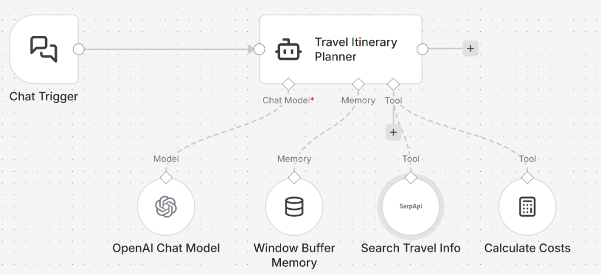

Trigger node, and the output data from one node flows
seamlessly into the next core node down the chain to perform operations on that data.Chat Trigger waits for a user to type a message to start an
interactive chat session, or a Webhook waits for an HTTP request.HTTP Request fetching server data, a Set node to
format outputs, or a Gmail/SMTP node to fire an email off in the background.Agent node acts as the conversational travel planner.OpenAI Chat Model securely passes instructions to underlying base
models like GPT-4o.Window Buffer Memory stores the last few messages tied uniquely to
the current user's chat session ID.Search (SerpAPI) searches live Google results, or the
Calculator strictly processes tight budgets mathematically.
If node branches the workflow down path A or path B based on
checking true/false field values.Before building your agent, you will need active accounts and API keys for the services used in the workflow.
n8n Travel Agent.
You can manually re-build the specific AI Travel Itinerary Planner natively inside your n8n
workspace by re-creating the structure defined in your .json file. Follow these exact node
instructions:
Step 1: Start the Conversation (Chat Interface)
sessionId parameter to track the conversation.Step 2: Add the Agent Brain
Main input of the Agent.
"You are an expert travel planner assistant. Speak naturally with the user to discover their destination, budget, duration, and preferences. Once you have enough information, use your tools (like SerpAPI and Calculator) to generate a detailed day-by-day itinerary. CRITICAL INSTRUCTION: You MUST format the final itinerary exclusively as a Markdown table with exactly these three columns: | Day | Plan | Cost |"
Step 3: Connect the LLM
gpt-4o.Language Model port on your AI Agent.Step 4: Enable Chat Memory for the Trip Planning
Memory port of the AI Agent.={{ $('Chat Trigger').item.json.sessionId }} (or select the "Connected Chat Trigger Node"
dropdown).
Step 5: Provide External Tools to the Trip Planner
Tools port of your AI Agent. This allows the bot to search current
real-world flight prices, top-rated hotels, and active local events instead of halluncinating data.
Tools port of the AI Agent. The agent will use this to accurately
calculate the day-by-day cost against the user's hard budget limitation without making math errors.
Summary of Data Flow:
User inputs text in Chat Trigger -> Flows into Travel Planner Agent ->
The Agent utilizes OpenAI to reason, pulls past context from Window Buffer,
and actively queries SerpAPI and the Calculator to structure the response
mathematically back to the user as a Markdown table.
Test out your new chatbot's capabilities natively in the n8n interface using these examples:
Prompt 1: "I want to take my partner on a 3-day anniversary trip to Rome. We absolutely despise seafood,
and love classical architecture."
Prompt 2 (Sent immediately after): "Actually, Paris might be more romantic. Change the destination to
Paris, but keep the 3-day duration and the deep food constraints the exact same."
Prompt: "I have exactly $2,500 for a 4-day trip to London. I want to see a popular play in the West End taking place this month. Use your search to find the price for one, use your calculator to determine how much I'd have left over for a modest hotel, and lay it out in the table."
Prompt: "I need a full content strategy for a new coffee brand. Have your Research Agent find 5 trending
coffee topics, have your SEO Agent write the keywords, and then have your Writer Agent generate the blog post
drafts."
(Note: This requires explicitly connecting multiple sub-Agents as 'tools' to one master Supervisor Agent
node!)
Prompt: "What is the detailed live weather forecast for Helsinki over the coming weekend? Recommend an itinerary entirely based on whether it is going to rain or be sunny."
Prompt: "I need to travel from Chicago to Miami next week for a conference. Search for the absolute cheapest travel method, and search for the fastest travel method. Use the calculator to explain the robust time-vs-money difference, and decide which is a better overall value if I value my time specifically at $75 per hour."